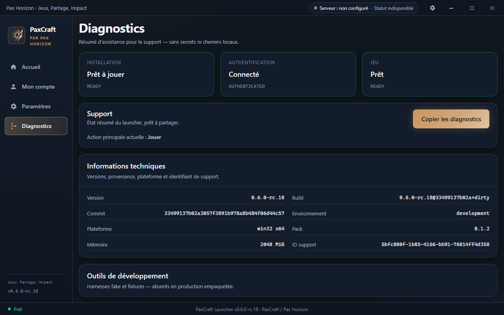
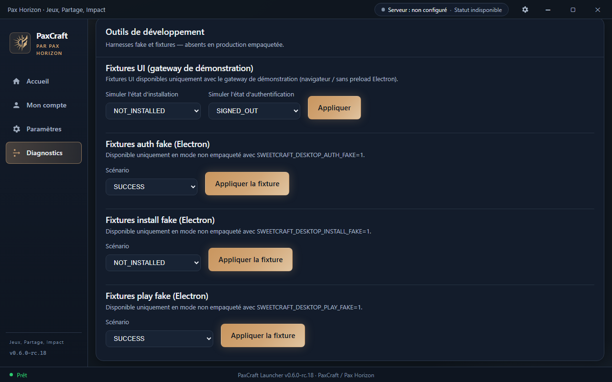

Viewport 1280×800 · Dev gateway · HEAD 33499137b02a3057f3891b978a8b484f06d44c57

01-diagnostics-top Diagnostics — haut (états + support)02-diagnostics-technical-open Informations techniques ouvertes03-diagnostics-devtools-open Outils de développement ouverts

04-diagnostics-bottom Diagnostics — bas (outils Dev)